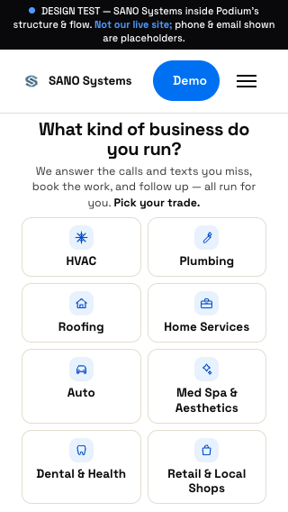
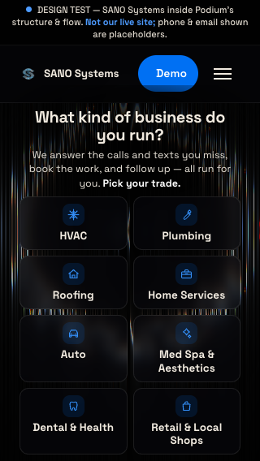
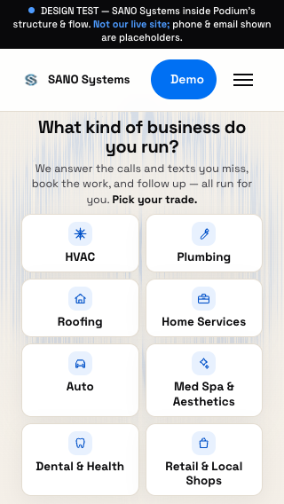

You asked whether the original SANO page — the one with the moving background — is doing anything better than the current doorway site, and whether we should take it. Three renditions of the same doorway, so the background is the only variable. Nothing here is live on the site.
Not CSS. The beta landing runs a WebGL fragment shader — a mosaic-quantised field of expanding rings with a per-channel phase split, which reads as those vertical prismatic streaks. It is genuinely good, and it is the only thing in the whole SANO estate that has real depth.
The field is worth having, but the doorway is the wrong screen for it. The doorway has exactly one job — eight tiles, one decision, one screen at 320×568 — and a moving background competes with the only thing the visitor is supposed to do there. On the beta landing the field sits behind a claim ("Your Website Is Your Worst Salesperson"), which is what it's good at. Our equivalent of that screen is the trade-page hero, which is also open item #12 (no CTA above 88% depth) — one treatment, two problems. B is the strongest thing on this page and I am not recommending it for this screen.
The library is the whole cost, and none of it is the effect.
| Thing | The beta landing today | What I'd ship |
|---|---|---|
| Payload for the background | 529,393 B raw / 133,565 B gzip three.js r89, from cdnjs |
6,982 B raw / ~2,300 B gzip vanilla WebGL1, no dependency |
| What three.js contributes | A fullscreen quad and a clock. The scene graph, loaders, materials, math library and renderer are all unused — 98.7% of the bytes are overhead, and the GLSL is byte-identical either way. | |
| Third-party dependency | a cdnjs.cloudflare.com script tag |
none — and this matters here: the shipped doorway source contains no absolute URL anywhere (that's what makes the domain move a one-line change). A CDN tag would be the first. |
| Animation clock | time += 0.034 per frame — runs 2× fast on a 120Hz display |
driven by elapsed ms, same speed on every display |
| Device pixel ratio | uncapped — a DPR-3 phone shades 9× the pixels of a laptop | capped at 1.5 (~4× less fragment work on that phone) |
prefers-reduced-motion |
not honoured — the shader animates regardless (the page has two guards; both are on the edit-mode demo) |
one static frame, no requestAnimationFrame at all |
| No WebGL / context lost | silently nothing | falls back to the static gradient underneath |
| Off-screen / hidden tab | document.hidden only |
IntersectionObserver + visibility — zero work when not seen |
One thing I can't measure for you honestly: how it feels on your actual phone. These were rendered in headless Chrome on software GL, which is faithful for the shader's maths and useless for thermals and battery. Open B on your phone before deciding.
This is the part that isn't a CSS question, and it's why I'm not just shipping B.
The effect is an additive glow on black. That only exists on a dark page. So "take the moving background" and "make the site dark" are the same decision, and the site is currently Warm Vanilla + Near-Black + Electric Blue (brand-kit D-0034), while the beta landing and the galaxy build are Prismatic Dark (black + cream #F2EBE0 + blue/cyan).
SANO currently has two visual identities and no record of which one wins. That's a real inconsistency, it's yours to call, and it's bigger than this page — it decides what the site looks like when the domain lands. Rendition B is what "Prismatic Dark wins" looks like on the doorway. Rendition C is what "Warm Vanilla wins, but give me some life" looks like.
Live and running — each field pauses itself when it scrolls out of view, so only the one you're looking at is doing work. Desktop frames are the real page at 1280px, scaled to fit; the phone column is a real 320×568 render, the width the doorway invariant is measured at.
The control. Generated from the real index.html on every build, so it can't
drift from what's live.

320×568 · the width the doorway invariant is measured atThe effect exactly as the beta landing has it, plus the dark skin it requires. Tiles become
translucent so the field reads through them — box metrics untouched, so all eight still fit one
screen at 320×568. This is the premium one, and if you tell me the brand answer is Prismatic Dark, this
is the direction for the whole site. Two things it cost to make it pass:
the head block needed its own local scrim (the global one let a bright ring take the sub copy to
3.02:1, under the 4.5 that 16px text owes — now 7.08:1), and my first draft of the dark skin
pushed the 8th tile off the phone screen by promoting .skip into flow.

320×568 · the width the doorway invariant is measured atSame shader, rendered subtractively: it tints Warm Vanilla toward Electric Blue and is clamped at 30% so it can never reach the point of fighting contrast. No rebrand, no new colours, nothing for the copy or the tiles to absorb — worst-case measured contrast actually stays above 7.9:1. Honest weakness: at that clamp it's subtle to the point that in a still frame it reads more like paper texture than intent. It's alive in motion, but it is not the beta landing's punch, and it never will be on a light page.

320×568 · the width the doorway invariant is measured atThe field behind a claim, not behind a picker. Worth noting: the original's own headline runs at low contrast against those streaks — the blue "Worst Salesperson." line especially. That is the failure mode the gate exists to catch.
A shader behind live text fails intermittently — the rings move, so a headline that
passes at t=0 fails at t=2.4s. So vbg.js hides the text, screenshots the true backdrop behind
each text box at 8 points in time, and grades the worst pixel in every frame against WCAG — headline
and body copy separately, because they owe different ratios. Then it re-checks the doorway invariant.
prefers-reduced-motion; the
doorway site already has five such guards and I'm not breaking that record for a background.contrast.js does not.DECISIONS.jsonl entry either way.